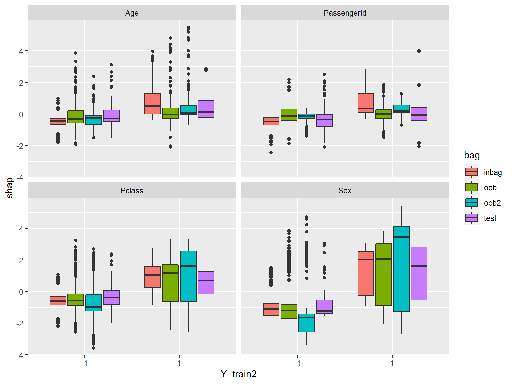
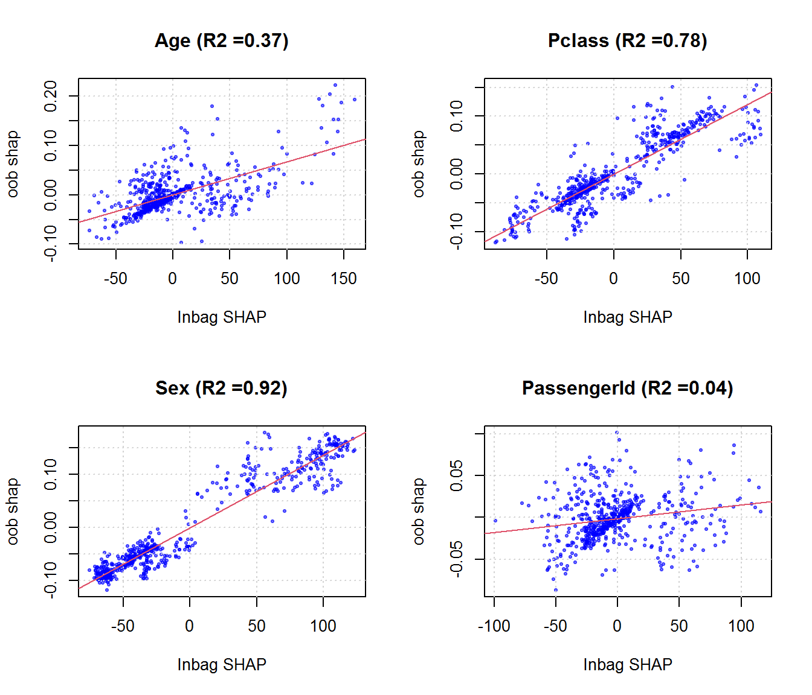
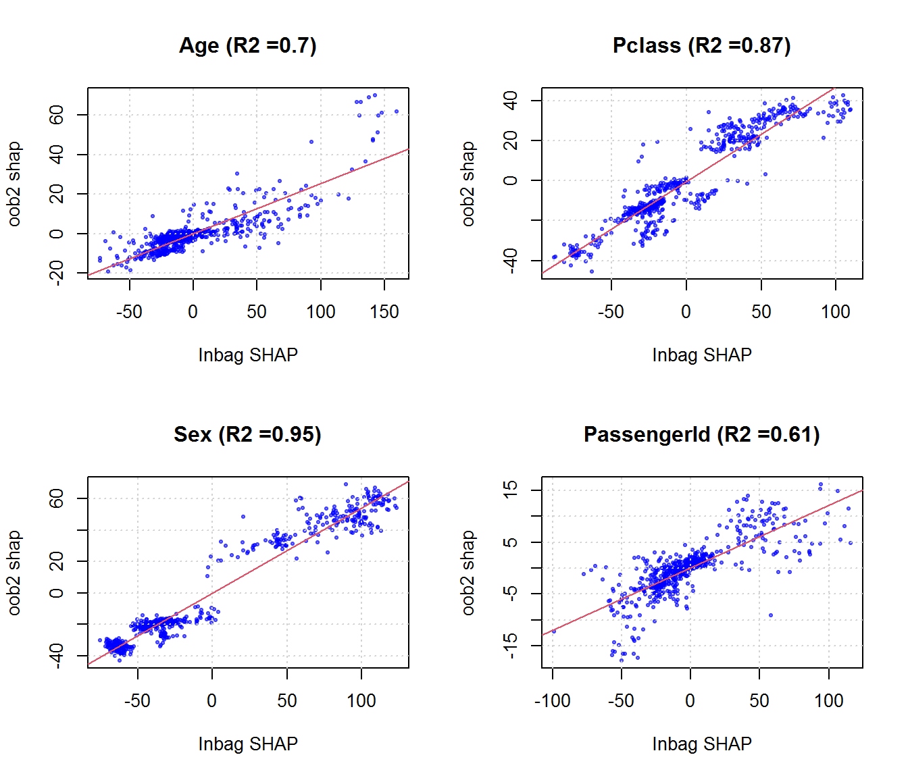

Chapter 4 Honest Trees
Inspired by “honest trees”: we want to recompute SHAP values on trees where the node predictions (based on the inbag data) have been replaced by oob estimates. (Problem: the oob data are much smaller and lead to many empty nodes, so we have to prune the trees!)
In analogy to Figure 3.3 we use boxplots facilitate easy comparison between inbag and oob as well as honest tree versions (“ob2”) SHAP values

Figure 4.1: The difference in SHAP distributions the sign of \(Y_{train}\) is greatest for informative features.
In analogy to Figure 3.4
par(mfrow=c(2,2))
for (j in 1:4){
fit = lm(shap_oob_avg[,j] ~ shap_inbag_avg[,j])
R2 = round(summary(fit)$r.sq,2)
plot(shap_inbag_avg[,j],shap_oob_avg[,j],col=rgb(0,0,1,0.5), pch=20,cex=0.75, xlab = "Inbag SHAP", ylab="oob shap", main = paste0(colnames(shap_inbag_avg)[j], " (R2 =", R2,")"));grid()
abline(fit,col=2)
}
par(mfrow=c(2,2))
for (j in 1:4){
fit = lm(shap_oob2_avg[,j] ~ shap_inbag_avg[,j])
R2 = round(summary(fit)$r.sq,2)
plot(shap_inbag_avg[,j],shap_oob2_avg[,j],col=rgb(0,0,1,0.5), pch=20,cex=0.75, xlab = "Inbag SHAP", ylab="oob2 shap", main = paste0(colnames(shap_inbag_avg)[j], " (R2 =", R2,")"));grid()
abline(fit,col=2)
}